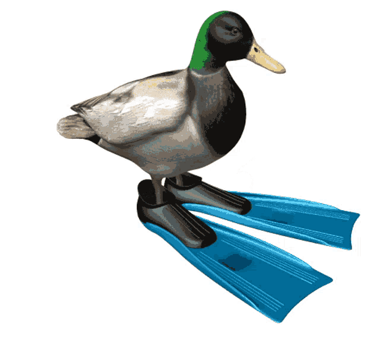
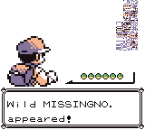
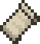
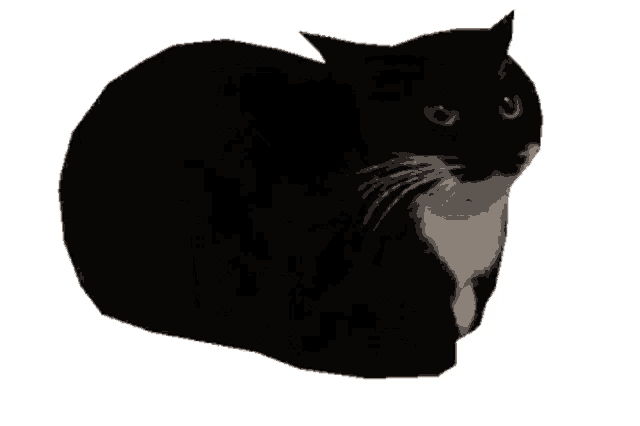

- 1
BigChadGuys+ decompilation
Decompilation of a minecraft modpack called: BigChadGuys+ (Non Cobblemon!) by jflec (with some additional mods) for fabric 1.20.1
privateactive - 2

- 3

Glorified abandonware
A place to store some of the code for some required course I need to take (oh well).
publicstopped - 4
Mihoshiho decompilation
A (soft) decompilation of the game: Mihoshiho - It Will Be Okay! on itch.io, because the last part of the game is almost impossible to pass thourgh
privatecompleted - 5
- 6

- 7
Buffering.simulation
An run-in-your-browser-tab app that streaming some video on a disk and serving some image on... a disk... as well
privateactiveBaguette ecosystem - 8
This generic playlist
A totally normal playlist player for my own customization with no twist whatsoever.
publicactiveBaguette ecosystem - 9
